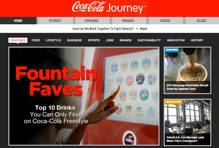

Estrategia de Content Marketing

El marketing de contenido o content marketing es una estrategia de marketing que consiste en crear y distribuir contenido relevante y valioso a fin de atraer, fidelizar y volver cliente recurrente a un público objetivo bien definido. Suena sencillo pero escribir contenido puede costar más trabajo de lo que parece.
En muchas ocasiones cuando me preguntan cuál es la estrategia más funcional para procurarse un público en la web y posicionarse como marca, mi respuesta es marketing de contenido. No obstante, aquellos que logran hacerlo, comienzan a cosechar frutos relativamente pronto.
Marketing de contenido
El marketing de contenido tiene una regla de oro y es: El contenido se escribe para los usuarios, no para la marca.

De forma inverosímil, las grandes compañías están fallando estrepitosamente, tal vez por el ego de la marca. Recordemo lo que hizo Coca-Cola pero que a tarves de su experiencia pudo corregir su enfoque real con Journey, un sitio lleno de contenido pero hasta hace poco hablando en demasía de ellos… confundiendo muchas veces el concepto claro de branded content. En contraposición miren lo que hizo Verizon al desarrollar The Recapp, un sitio de marketing de contenido dedicado a evaluar apps para smartphones, un recurso valiosísimo para los consumidores tanto de Apple como de Android; el site no busca hablar de lo maravilloso que es Verizon ni trata de vender nada, pero la marca sabe que entre más apps sean analizadas, mas usuarios querrán adquirir smartphones ¿ven la lógica? ¿Ven ahora lo débil del sitio de Coca-Cola y por qué deben comenzar a hablar menos de ellos y más de los intereses de sus seguidores?
Por esto aqui les dejo 5 pasos para ayudarles en cómo escribir contenido en una estrategia de content marketing.
1) Título y tags adecuados al usuario y a buscadores.
Una vez que sepan sobre qué van a escribir, ayúdense de Google Adwords Keyword Tool; una herramienta gratuita de Google que les da ideas y volúmenes de búsqueda sobre palabras clave. Escojan el título y los tags de acuerdo a ello.
2) Escribir pensando en el usuario.
El punto número uno va amarrado con éste: No fuercen el artículo para cazar con las keywords, escriban de forma natural, pensando siempre en el usuario y sus necesidades, y posteriormente analicen donde podrían insertar de manera fluida las palabras clave.
3) Optimizar pensando en Google.
A muchos podrán no gustarnos ciertos lineamientos del coloso del search … Una vez terminada nuestra nota, deberá optimizarse para el buscador, quien gusta de contenido estructurado, no repetitivo, no sobreoptimizado y bien ordenado. Aquí hay que pensar en utilizar bien las etiquetas de encabezado y los strong para keywords relevantes —(recuerden que las keywords pueden tener una o varias palabras, y deben pensarse en aquello que buscará el usuario, y en decirle a Google de que va nuestro contenido en el post—).
4) Utilizar imágenes.
Las razones de esto es que los usuarios prefieren posts con imágenes y porque ayudan al SEO. Google prefiere sitios con imágenes poco pesadas debido a la velocidad de carga; también debemos ponerles nombres como “henry_estretegias.jpg” y no DCMIMAGE10.jpg. Asimismo es igual de importante la etiqueta ALT que básicamente debe ser un descriptivo corto y objetivo de la fotografía. Hay mucha bibliografía sobre lo que dice Google sobre optimización en la web; recuerden que dice que para elaborar su rank toma en cuenta más de 200 criterios.
5) Socializar el post.
La santa trinidad en la web de hoy es: Contenido + SEO + Social Media. Por este motivo debemos tener presente qué oportunidades le estamos dando a nuestros lectores de socializar nuestro material. Las redes sociales son excelentes vehículos para traer tráfico y conferirnos autoridad, no dejemos pasar esa oportunidad.